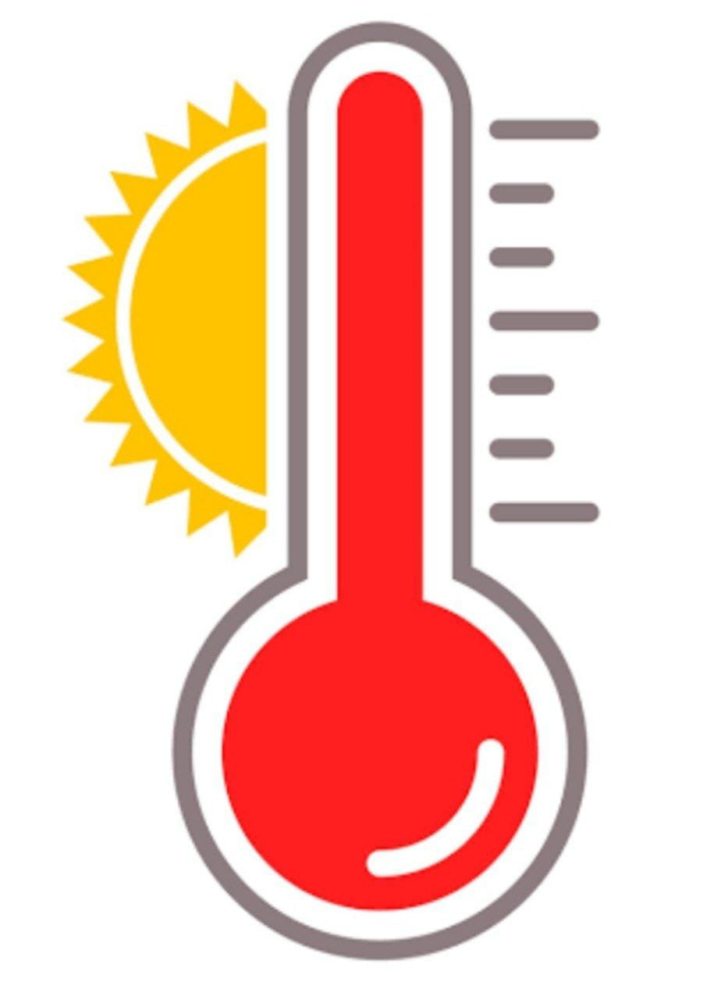

To find the temperature of an object,the bulb of the thermometer needs to be in close contact with that object.On heating the mercury expands and on cooling the mercury contracts.Watch the shiny line of mercury in the tube.The highest point on the scale,at which the rise of Mercury stops,shows the temperature of object. Whie reading the measurement place the thermometer paralle to your eye sight.
While measuring temperature if there two consecutive bigger marks differ by one degree and there are 10 divisions between them then one small division reads 1/10=0.1 units.
Click the below image to see how mercury inside the thermometer works.
